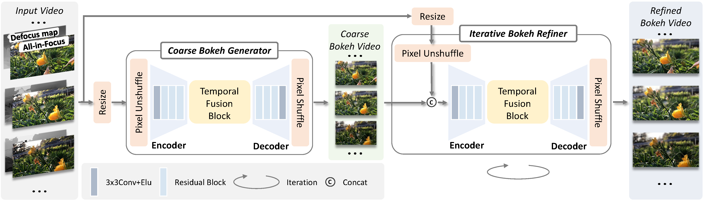

I am a first year Ph.D. student at MMLab, The Chinese University of Hong Kong, supervised by Prof. Tianfan Xue. My research interests lie in the fields of computer vision and deep learning, and I am currently focusing on controllable video generation, long video generation, and unified model.
Previously, I received my Bachelor's degree from Huazhong University of Science and Technology.
Publications
ShotStream: Streaming Multi-Shot Video Generation for Interactive Storytelling
ShotStream is a causal multi-shot video generation framework for interactive storytelling, enabling efficient on-the-fly frame generation at 16 FPS on a single NVIDIA GPU.
CamCloneMaster: Enabling Reference-based Camera Control for Video Generation
Yawen Luo, Xiaoyu Shi†, Jianhong Bai, Menghan Xia, Xintao Wang, Pengfei Wan, Di Zhang, Kun Gai, Tianfan Xue†
CamCloneMaster enables reference-based camera control by replicating camera movements from videos without camera parameters or test-time fine-tuning, supporting both I2V and V2V.
CineMaster: A 3D-Aware and Controllable Framework for Cinematic Text-to-Video Generation
Qinghe Wang*,Yawen Luo*(co-first author), Xiaoyu Shi†, Xu Jia†, Huchuan Lu, Tianfan Xue†, Xintao Wang, Pengfei Wan, Di Zhang, Kun Gai
CineMaster is a 3D-aware controllable text-to-video framework that lets users jointly manipulate objects and cameras in 3D space for cinematic video generation.

Video Bokeh Rendering: Make Casual Videography Cinematic
Yawen Luo, Min Shi, Liao Shen, Yachuan Huang, Zixuan Ye, Juewen Peng, Zhiguo Cao†
ACM Multimedia (MM), oral, Best Paper Candidate, 2024.
OmniDirector clones diverse multi-shot camera motions to animate source images using a camera grid representation and a hierarchical prompt expansion agent for multimodal control.
AnyRecon: Arbitrary-View 3D Reconstruction with Video Diffusion Model
AnyRecon reconstructs 3D scenes from arbitrary unordered sparse views by combining video diffusion with persistent global scene memory and geometry-aware conditioning.